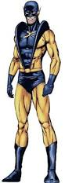
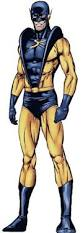

.jfif) 

Biographie des personnages
Henry Pym
Le docteur Henry Pym, dit « Hank » Pym, est le premier Homme-fourmi et l'un des membres fondateurs de l'équipe de super-héros les Vengeurs. Il est le créateur des « particules Pym » qui permettent, en les utilisant avec un gaz, de rétrécir ou de grandir. Hank Pym est aussi le créateur du robot Ultron.
Grâce à son gaz rétrécissant, Hank Pym peut réduire sa taille pour atteindre celle d'une fourmi. Il est aussi équipé d'un casque de sa propre invention doté d'antennes qui lui permet de contrôler les fourmis.
Il partagera sa découverte avec sa petite amie, Janet Van Dyne, qui deviendra plus tard sa partenaire sous le nom de la Guêpe pour lutter contre le crime.
Son cerveau semble avoir subi des dommages à cause du gaz rétrécissant. Il abandonne ensuite son identité d'Homme-fourmi pour devenir Giant-Man, Goliath ou encore Yellowjacket.
Scott Lang
Scott Edward Lang est un voleur repenti a été membre des Vengeurs et des Quatre Fantastiques.
Afin de sauver sa fille, il commet un cambriolage et s'empare des containers de gaz rétrécissant et du costume d'Henry Pym, le premier Homme-fourmi. Après avoir vérifié que Lang en fera bon usage, Hank Pym lui donne sa permission de les garder et de les utiliser.
Eric O'Grady
Eric O'Grady apparaît à la suite de la série intitulée The Irredeemable Ant-Man écrite par Robert Kirkman et dessinée par Phil Hester, où est mis en scène celui qui deviendra le troisième Homme-fourmi.
Pouvoirs, capacités et équipement
Capacités
Hank Pym est l’un des plus grands biochimistes au monde. Il possède également une expertise dans de nombreux autres domaines scientifiques, notamment en robotique, bio-ingénierie, entomologie et dans la physique quantique.
Scott Lang est un brillant électronicien, particulièrement spécialisé dans les systèmes de sécurité. Pendant le temps où il travailla chez Stark International, il conçut les système de sécurité de l’entreprise, ainsi qu'à une époque ceux du manoir des Vengeurs.
Pouvoirs et équipement
Grâce au particules subatomiques découvertes par Hank Pym (les « particules Pym »), stockées dans des tubes portés à la ceinture du costume de l'Homme-fourmi et protégées par un champ magnétique, celui-ci peut réduire sa taille jusqu’à atteindre celle d’une fourmi.
- La nature, l’origine et le fonctionnement précis des particules Pym n’ont pour le moment pas encore été établies clairement. Initialement, Hank Pym respirait un gaz ou buvait un sérum contenant ces particules. Après inhalation ou ingestion de ces particules, celles-ci interagissaient avec le champ électrique de son cerveau, créant un nouveau champ qui réduisait alors sa taille.
- Si Pym rétrécissait jusqu’à une taille de 3,8 mm>, il pouvait néanmoins se réduire encore plus, ou adopter n’importe quelle taille entre sa taille ordinaire et celle de 3,8 mm.
- Lors de sa réduction de taille, une partie de sa masse est « projetée » dans une autre dimension, via un portail interdimensionnel ouvert automatiquement après l'utilisation des particules Pym. En retrouvant sa taille normale, cette masse réintègre la dimension terrestre par un processus inverse, activé par l’inhalation d’un autre gaz ou sérum, qui contient une autre forme de particules.
- Du fait que sa masse reste liée à son corps, même de manière extradimensionnelle, l'Homme-fourmi conserve sa force normale même quand il est réduit à une taille minuscule.
- Il peut aussi réduire sa taille jusqu’à un niveau inframicroscopique (qui est trop petit pour pouvoir être observé au microscope optique) ; lorsque plus de 99,99 % de sa masse est projetée dans une autre dimension, Hank Pym est lui-même projeté dans un univers subatomique, également appelé « Microvers », accessible uniquement par un processus de réduction de taille.
Quand les tubes du costume de l'Homme-fourmi sont ouverts, les particules Pym, comprimées, deviennent visibles et se déploient sous la forme d’un gaz qui, une fois respiré, réduit ou accroît la taille de l'Homme-fourmi. Une exposition trop fréquente à ce gaz est cependant néfaste pour un individu, comme ce fut le cas pour Hank Pym, dont le cerveau semble avoir subi d'irréparables dommages.
L'Homme-fourmi porte un casque cybernétique conçu par le docteur Henry Pym et qui lui permet de communiquer avec les fourmis.
- Le casque peut émettre une onde radio dans un rayon d'environ un kilomètre et demi, selon les matériaux présents autour de lui.
- Le casque dispose également un système d'amplification sonore, et qui modifie également la fréquence de la voix, ce qui permet à l'Homme-fourmi d'être entendu des humains de taille normale, malgré sa taille réduite.
Pour se déplacer d'un endroit à un autre, l'Homme-Fourmi se sert de fourmis ailées comme montures.